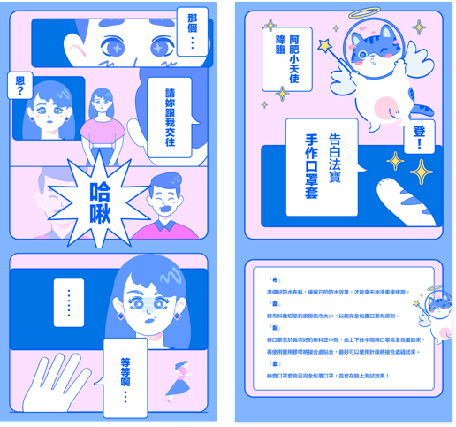

大五員倫小組 防疫網站
在這人心惶恐，充滿不安的世代。如今疫情橫行，防疫措施可不能少！ 人人都要拾起禱告的權柄，為疫情，為台灣，為世界來守望！宣告耶和 華沙龍要降臨在世上每個需要平安的地方！
【防疫懶人包漫畫】 創作者：Grace
今天就用漫畫教大家簡易的口罩套DIY流程， 『布，裁，黏，套』簡單4個步驟，客製屬於 自己的口罩套！ 🌟大家都完成了嗎？是不是比想像中還要簡 單！防疫措施除了預備口罩套，更不能少了禱 告的大能！ 羅馬書8：31『神若幫助我們，誰能抵擋我們 呢？』 雖然疫情持續擴散，但在禱告中我們仍帶著信 心與盼望，積極防疫、彼此關懷，成為裡外剛 強的防疫大軍！
【Pray for the world】
［為台灣來禱告，為國與國一起代禱］ 1. 為阿中部長與防疫單位：求主賜他們智慧和 身心平安，指教他們帶領前線做好防疫政策。 2. 為全球經濟：為因疫情重挫的產業禱告，求 主保守民生問題，能藉此產業轉型，甚至興起新 型態產業，經濟快速復甦。 3. 為台灣能做醫療外交服事各國：求主幫助台 灣，在醫療上的卓越能成為幫手去服事各國。 4. 為美歐亞各國疫情：主你看到這世上有許多 的災難跟眼淚，求你擦去這些眼淚，醫治傷痛。
【防疫食品一起吃起來】
本週小組整理7-11三類飲食，從「食物、零 食、飲料」精心挑選3樣增強抵抗力、免疫力的 好東西要分享給大家喔！(• ω•́) 🍪食物: ・優格:補充雷特氏菌，增加腸胃好菌 ・香蕉:補充維他命 B2，膳食纖維促進腸胃蠕動 ・綜合堅果:含有豐富維生素與脂肪酸，有益心 血管健康，每天約手心大小的份量 🍰零食： ・果乾:在同等重量下，水果乾的膳食纖維、維 生素和礦物質等含量，可高達水果數倍！
Created by…
小畫家少女與機械系小孩攜手合作
Grace
視覺設計師 ＆ 插畫家少 女。夢想是能每天看漫畫 過日子。
尚蓁
不乖乖讀機械跑去當程式教育講師的小孩。